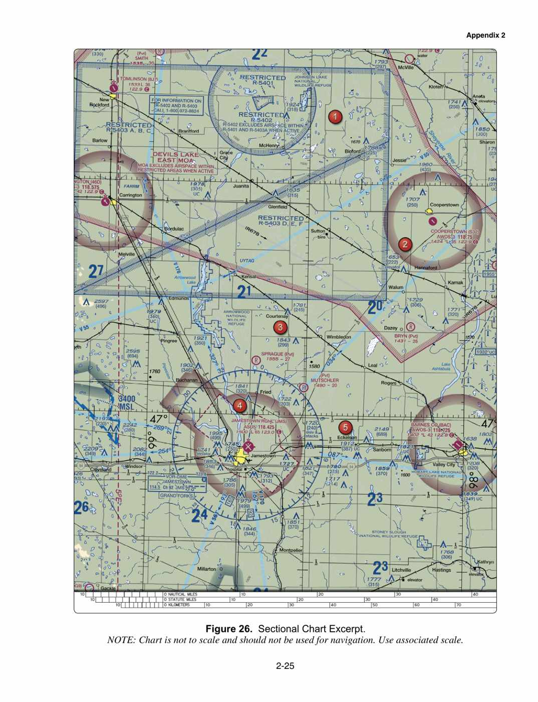

(Refer to Figure 26, area 2 — Cooperstown.) While monitoring the Cooperstown CTAF you hear an aircraft announce they are midfield left downwind to RWY 13. Where would the aircraft be relative to the runway?